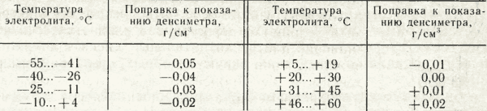
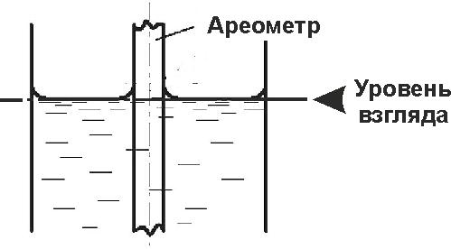

Тема 12
Жидкости для гидравлической
системы и электролиты
Жидкости для
гидравлических систем применяются в гидравлических приводах и амортизаторах
автомобилей, а также в подъемных устройствах автомобилей-самосвалов.
Амортизаторные
жидкости
Амортизаторные
жидкости представляют собой маловязкие масла, которыми заполняют гидравлические
амортизаторы. Они должны обладать хорошими смазывающими и антикоррозионными
свойствами, иметь низкую температуру застывания и достаточную вязкость при
температуре до 100 °С, стабильность, обеспечивающую сменную работу до 100 тыс.
км пробега автомобиля.
Основным
показателем для амортизаторных жидкостей является вязкость. Большинство рабочих
жидкостей, применяемых в телескопических амортизаторах, имеют следующие
значения вязкости: при температуре 20 °С — 30—60 мм2/с; 50 °С —
10—16 мм2/с; 100 °С — 3,5—6,0 мм2/с. Высокие требования
предъявляются к вязкости амортизаторной жидкости при отрицательных
температурах. Так, при температуре —20 °С вязкость не должна превышать 800 мм2/с.
При более высокой вязкости работа амортизатора резко ухудшается и происходит
блокировка подвески. Уже при температуре —30 °С вязкость товарных
амортизаторных жидкостей превышает 2000 мм2/с, а при —40 °С
достигает 5000—10 000 мм2/с. При таких температурах обеспечить
требуемую вязкость могут амортизаторные жидкости на синтетической основе.
Выпускаются
амортизаторные жидкости марок АЖ-12Т и МГП-10.
Амортизационная
жидкость АЖ-12Т — прозрачная, цвет от светло-желтого до светло-коричневого,
является смесью маловязкого минерального масла и полиэтилсилоксановой жидкости
с противоизносной и антиокислительной присадками, температура застывания —52
°С.
Амортизационная
жидкость МГП-10 — прозрачная, цвет от светло-желтого до светло-коричневого,
является смесью трансформаторного масла и полисилоксановой жидкости с
добавлением животного жира, антиокислительной и противопенной присадок,
температура застывания не выше —40 °С. МГП-10, применяемая уже длительное время
в амортизаторах легковых автомобилей классических моделей, не обеспечивает
достаточной износостойкости телескопических стоек переднеприводных моделей.
Поэтому на смену ей была разработана амортизаторная жидкость МГП-12 с
улучшенными смазывающими свойствами.
В
состав амортизаторных жидкостей вводят различные добавки против окисления,
вспенивания, повышения смазывающих свойств и температуры застывания.
Простейшими
заменителями амортизаторных жидкостей могут служить индустриальное, турбинное и
трансформаторные масла, а также их смеси, однако при понижении температуры у них
значительно возрастает вязкость, что приводит к жесткой работе амортизатора.
Электролит.
Одним
из важнейших компонентов, участвующих в работе автомобильного аккумулятора,
несомненно, является электролит — раствор серной кислоты (H2SO4)
в дистиллированной воде (H2O). При приготовлении электролита
необходимо использовать химически чистые компоненты, а также чистую посуду и
приборы — наличие посторонних примесей значительно ускоряет
саморазряд АКБ.
Основным
параметром электролита является плотность. Плотность электролита проверяют при
температуре плюс 25°С. Если температура отличается от указанной,
вносят поправку к показаниям ареометра в соответствии с таблицей Рис.1.

Рис.1.
Поправки для приведения плотности электролита к температуре +25°С.
Повышенная плотность
электролита отрицательно сказывается на сроке службы аккумулятора вследствие
ускорения коррозионных реакций на положительном электроде. Также от
плотности электролита зависит температура его замерзания, что особенно
важно в период зимней эксплуатации батареи. Так при плотности 1,28 г/см3замерзание
происходит при температуре −64°С, при плотности 1,27 г/см3 -
при температуре −58°С, а при плотности 1,11 г/см3 — уже при
−7°С. Поэтому повторим, батарею лучше всегда держать полностью
заряженной, особенно зимой.
Для
измерения плотности используют приборы — денсиметры. Один из
видов денсиметров показан на Рис.2. Он состоит из
ареометра 1, стеклянной пипетки 3, резиновой груши 2 и
резиновой пробки 4 с наконечником.

Рис.2. Денсиметр.
Перед
использованием нужно проверить чистоту денсиметра, и при необходимости
тщательно вытереть его. Наконечник денсиметра погружают в жидкость строго
вертикально, через заливное отверстие в аккумуляторе и с помощью резиновой
груши засасывают часть электролита в стеклянную пипетку. Ареометр должен
всплыть в пипетке, при этом необходимо следить за тем, чтобы ареометр
не касался стенок и дна пипетки. После того, как ареометр установится и
прекратятся его колебания, производится отсчет вдоль линии жидкости. При
отсчете глаз наблюдающего должен находиться на уровне поверхности
жидкости Рис.3.

Рис.3.
Отсчет показаний ареометра.
Электролит
для кислотных аккумуляторных батарей представляет собой раствор аккумуляторной
серной кислоты в дистиллированной воде. Аккумуляторная серная кислота имеет
плотность 1,83 г/см3, а плотность электролита зависит от
климатической зоны и колеблется от 1,24 до 1, 31 г/см3. Электролит
плотностью 1,31 г/см3не замерзает даже при температуре -60º С, а при
плотности 1, 15 г/см3 замерзает уже при температуре -14º С.
При
приготовлении электролита аккумуляторную кислоту тонкой струей льют в воду.
Если делать наоборот возможен выброс кислоты, которая может повредить кожу и
одежду работающего. При разведении кислота разогревается. Для определения
плотности электролита используют денсиметр (ареометр). При понижении уровня
электролита в аккумуляторную батарею добавляют дистиллированную воду или
электролит плотностью 1400 кг/м3 (50 %воды и 50 % серной
кислоты по массе).
Пусковые
жидкости
В
условиях низких температур при отсутствии пускового подогревателя на двигателе
для облегчения пуска холодного двигателя могут применяться пусковые жидкости,
которые обеспечивают холодный пуск двигателя с последующим переходом его работы
на штатное топливо.
Отечественной
промышленностью выпускаются следующие пусковые жидкости:
Арктика
— для карбюраторных двигателей;
Холод
Д-40, жидкость НАМИ и диэтиловый эфир — для дизелей.
Диэтиловый
эфир является обязательным компонентом всех пусковых жидкостей. Кроме него для
снижения износа в состав пусковых жидкостей вводят присадки с маслами, а также
компоненты, способность воспламеняться которых находится между эфиром и
топливом.
Пусковые
жидкости Арктика, НАМИ и Холод Д-40 впрыскиваются во впускной трубопровод или
камеру сгорания с помощью специального приспособления, для этого они
выпускаются в запаянных ампулах. Пять—восемь капель диэтилового эфира подается
во впускной трубопровод при снятом воздушном фильтре в момент проворачивания
коленчатого вала.
Стеклоомывающие
жидкости
В
качестве стеклоомывающей жидкости обычно используют воду. Однако вода замерзает
при температуре окружающей среды ниже нуля и не поступает к форсункам системы
омывания. Вторым недостатком воды является то, что она в силу высокого
поверхностного натяжения плохо смачивает стекло и в виде капель стекает с него.
Для устранения этих недостатков производят специальные стеклоомывающие
жидкости, которые представляют собой смеси воды, спирта и моющего вещества. В
качестве спиртов за рубежом используют этанол, метанол и изопропанол. В России
выпускают жидкости только с изопропанолом. Производители выпускают, как
правило, концентраты (60—80 % спирта), которые разбавляются водой в два—четыре
раза. Оптимальной концентрацией можно считать 10—29 % спирта (в зависимости от
температуры окружающей среды), что обеспечивает нормальную подачу жидкости к
форсункам и хорошую растекаемость по стеклу.
Моющие
средства
Для
удаления различных технических загрязнений в системах, узлах и механизмах
применяют моющие средства. Эти средства могут быть однокомпонентными и
многокомпонентными.
Для
очистки двигателя при смене масла применяют промывочное масло ВНИИ НП-ФД. При
отсутствии специального масла работающий на холостом ходу двигатель промывают
маслом с низкой вязкостью типа МГ-22А (АУ) или индустриального, либо смесью из
10 % дизельного топлива и моторного масла. Масляный радиатор промывают смесью
из 75 % бензина и 25 % ацетона.
Топливный
бак автомобиля промывают сильной струей воды, затем бензином, взбалтывая, а
после продолжительной эксплуатации — ацетоном и горячей водой.
Детали
карбюратора промывают, погружая на 20—30 мин в ацетон.
Существуют
и специальные моющие средства, такие, как ТМС-31, Вертолин-74, которые
используют для межоперационной очистки металлических деталей от маслообразных
загрязнений.
МС-4,
МС-6 и Нефос — серия лабомидов, применяется для очистки деталей при ремонте
автомобилей от асфальтосмолистых и маслогрязевых отложений.
Средство
«Анкрас» очищает детали камеры сгорания от нагара.
В
настоящее время автохимия предлагает потребителям широкий ассортимент
современных моющих средств различного направления.
Контрольные
вопросы
1.
Назовите марки амортизаторных и пусковых жидкостей.
2.
Назовите основные
требования, предъявляемые к качеству амортизаторных жидкостей?
3.
Перечислите
основные марки амортизаторных жидкостей?
4.
Перечислите
основные марки пусковых жидкостей, назовите основные компоненты, входящие в их
состав?
5.
Каким
образом пусковые жидкости вводятся в двигатель при его запуске?
6.
Укажите
требования безопасности при работе с электролитами